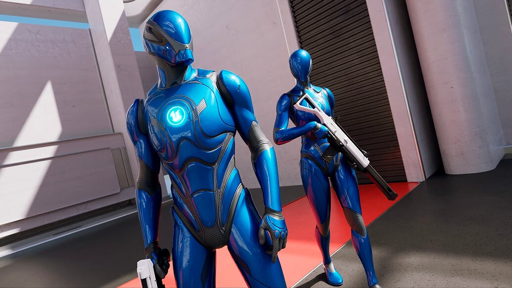
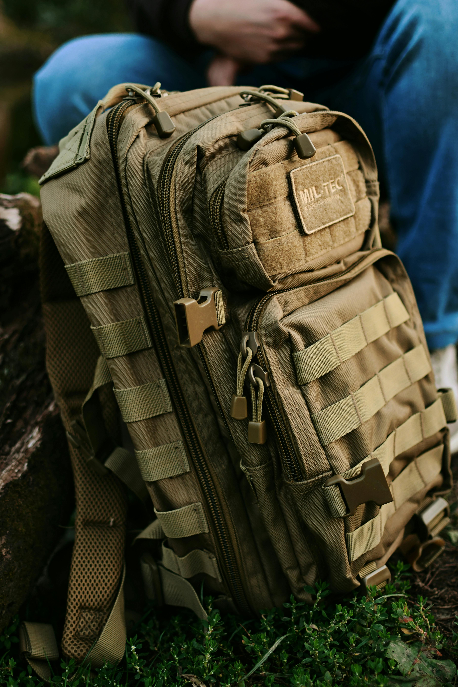
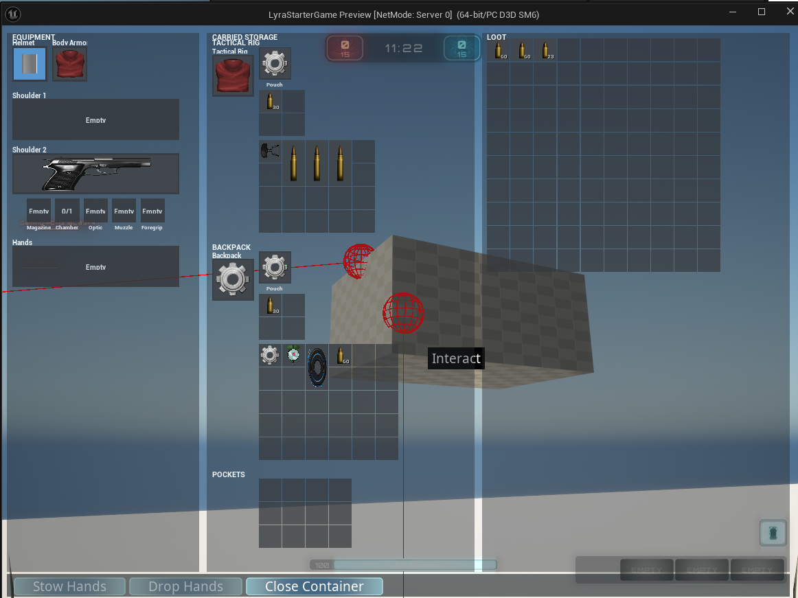

Every survival game begins with a question: what can you do with almost nothing? That question is useful for the player, but it is even more useful for development. When the project is new, there is no final map, no economy, no polished progression, and no long list of content to hide behind. There is only the loop.
The first goal is not to build the whole game. It is to survive the first night. In development terms, that means proving the minimum set of mechanics that everything else can stand on: seeing through the character's eyes, handling a weapon, moving items through an inventory, and making sure the server is the authority from the start.
A survival game is not interesting because the player owns everything. It is interesting because every useful thing has to be found, earned, protected, moved, risked, or lost. — Working Principle
The First Tools
The project is being built from Unreal's Lyra sample, which gives a strong base for input, abilities, multiplayer patterns, UI layers, and shooter-style combat. The job is not to throw that away. The job is to adapt it into something harsher, slower, and more physical.
Lyra is built around fast shooter assumptions. A survival game asks different questions. Where is this item actually stored? What happens when it is dropped? Can another player pick up the exact same instance? Does a magazine remember how many rounds are inside it? Does the server agree with what the client thinks happened?

First-person camera
The camera is one of the first survival promises. The world needs to feel immediate, readable, and dangerous. Getting the first-person view working early makes every later mechanic easier to judge.
Aiming down sights
ADS is more than a zoom. It is weapon presentation, animation, alignment, timing, and feedback. The prototype is building that on top of Lyra's weapon foundation while keeping presentation separate from server-owned weapon state.
Lyra adaptation
Lyra supplies the base camp: Gameplay Ability System, Enhanced Input, CommonUI, equipment, experiences, and multiplayer structure. Survival work extends those systems instead of creating a parallel game beside them.
Multiplayer first
Inventory, equipment, loot, reloads, and item use are being treated as server-authoritative from the beginning. That is slower upfront, but it prevents the worst survival-game bugs from becoming design pillars by accident.
The Backpack Problem

The inventory is where the survival game starts to become real. A list of items is easy. A spatial inventory is not. Once items have size, rotation, containers, equipment slots, world drops, and nested storage, every move becomes a small transaction with consequences.
The current inventory direction is grid based and physical. Pockets are a small permanent container. A backpack is not just a bigger list; it is an item that can hold other items. A tactical rig can expose its own storage. Pouches can attach to gear. Items can move between player inventory, equipment slots, loot containers, world drops, and nested item containers.

One item instance lives in one place at a time. If that rule breaks, the game gets duplication bugs, stale UI, invalid reloads, and impossible loot states.
That is why a lot of early work has gone into ownership checks, transaction boundaries, rollback, and clear movement rules. The player should feel like they are dragging a can of food into a backpack. Under the hood, the server needs to know exactly which item moved, where it came from, where it went, whether the move was legal, and how to undo it if something fails.
Most Runs End Early
Survival games are full of failed runs. Development is too. A mechanic can look fine in isolation and then collapse when it touches networking, UI, animation, equipment, or replication. That is normal. The important part is building the project so failed attempts leave behind useful knowledge instead of permanent mess.
The current milestone is deliberately small: prove a player can enter a prototype map, find loot, equip it, aim, reload, move items through the inventory, drop items back into the world, and have those actions make sense in multiplayer. That is the campfire. Everything else comes after.
What Comes Next
Harden the loop
- Keep hardening the inventory move path.
- Validate pickup, drop, loot, equip, ADS, and reload with multiple clients.
- Make the prototype loop readable enough that failures are obvious.
- Bring early food, drink, and basic survival feedback into the loop.
Build the world out
- Turn the test slice into a stronger survival prototype map.
- Add more complete death, respawn, and loot-loss behavior.
- Expand infected-style PvE into a real pressure source.
- Separate survival systems through Lyra experiences and action sets.
Find the game's identity
- Build toward persistence, account progression, and seasonal world rules.
- Add factions, reputation, identity, and social consequences.
- Support survival first; explore extraction and arena variants from the same foundation.
- Move from prototype content toward a distinct world, economy, and player stories.
Finding The Story
The theme of the game is also becoming the theme of the development process. Start with nothing. Find what matters. Build shelter around the systems that work. Throw away what does not. Make choices under pressure. Most attempts will die somewhere along the way. A few will survive long enough to become the path forward.
Right now, the path is not a finished world. It is a set of hard foundations: first-person play, weapon handling, multiplayer authority, and a spatial inventory that treats items like real things instead of menu entries. That is enough for the first run.